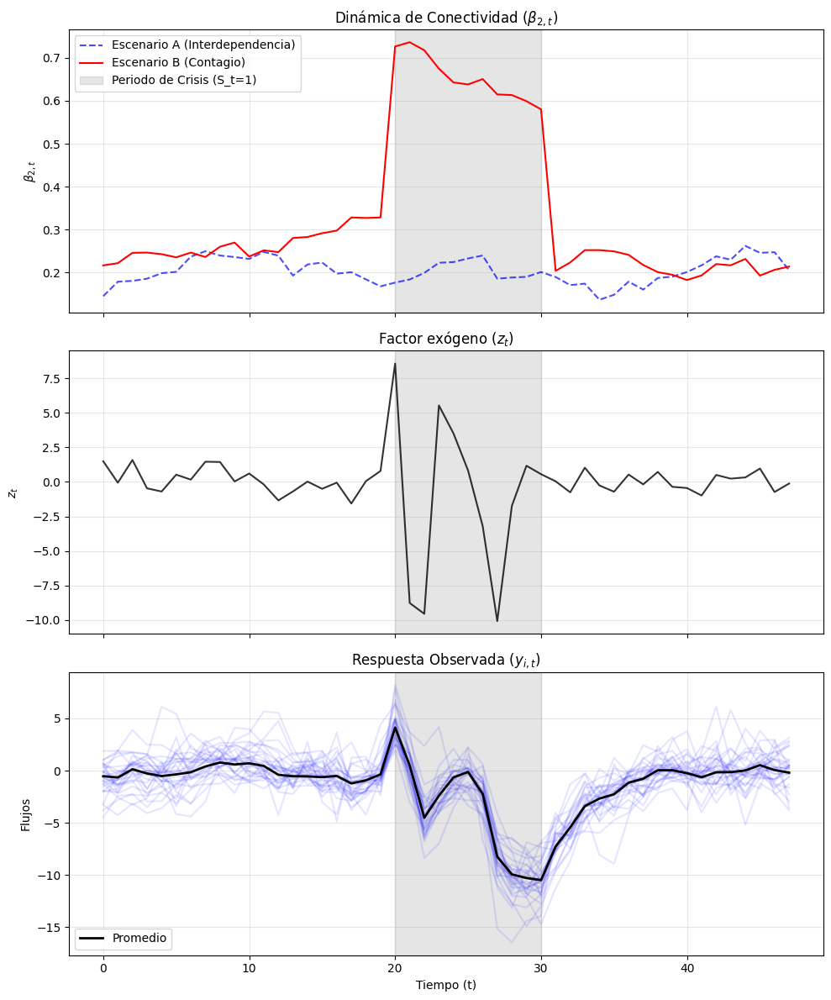
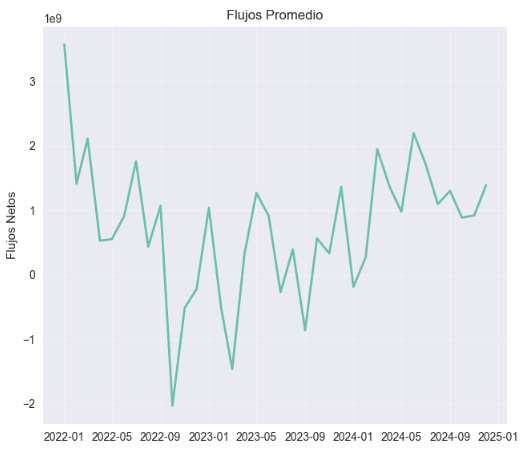
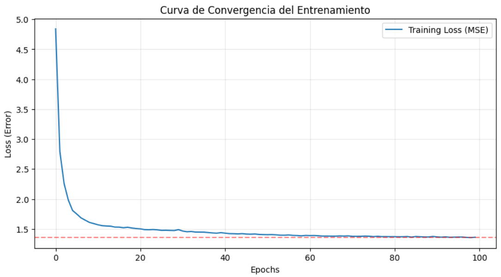
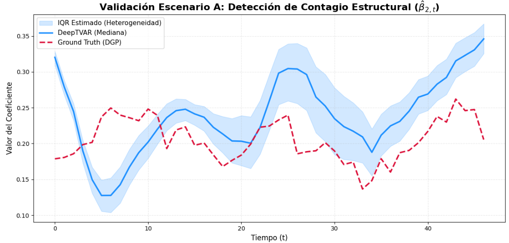
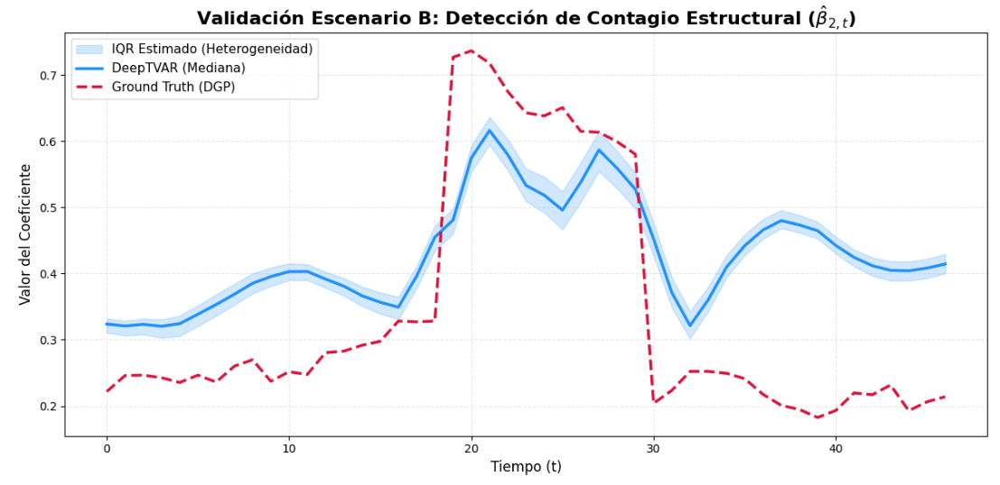
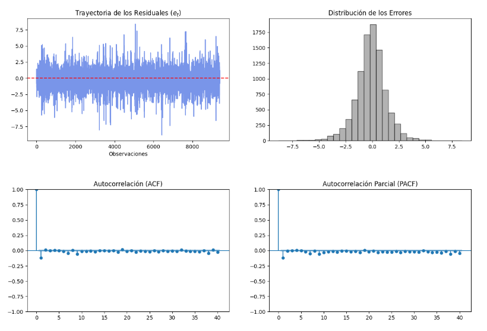

Validación de Arquitectura DeepVAR mediante simulación Monte Carlo
1. Introducción
Tomando como punto de partida el modelo DeepTVAR: Deep Learning for Time-Varying Vector Autoregression introducido por Li & Yuan (2024), continuamos con el enfoque de usar redes neuronales recurrentes (RNN) para estimar parámetros estructurales en modelos VAR. Este método demostró ser más eficiente que los métodos bayesianos tradicionales (como el Filtro de Kalman), especialmente al capturar no linealidades complejas en la evolución de los coeficientes sin imponer formas funcionales rígidas a priori.
Sin embargo, la aplicación directa del DeepTVAR enfrenta una limitación severa en contextos financieros comunes en donde se tienen muchas variables (países, instituciones financieras, asesores comerciales) y datos disponibles limitados (series de tiempo mensuales de 4 o 5 años). Un sistema VAR completo implicaría estimar \(N^2\) interacciones dinámicas, una tarea estocásticamente inviable dada la restricción de series de tiempo cortas (\(T\) pequeño), lo que llevaría inevitablemente a un sobreajuste masivo y a una nula capacidad de generalización.
Para resolver este problema de identificación en entornos de “\(N\) grande, \(T\) pequeño”, integramos la teoría de Efectos Correlacionados Comunes (CCE) de la econometría de paneles dinámicos. Siguiendo los fundamentos establecidos por Pesaran (2006) y extendidos por Chudik y Pesaran (2015), sustituimos la densa matriz de interacciones bilaterales por una aproximación de Campo Medio (Mean Field Approximation). Esta decisión teórica nos permite comprimir la información de la red en un único regresor exógeno: el promedio transversal de los flujos (\(\bar{y}_{t-1}^{(-i)}\)). Al asumir que la influencia sistémica se transmite a través de este agregado global, reducimos drásticamente el espacio de parámetros, transformando un problema de alta dimensión en una especificación parsimoniosa que retiene la capacidad de medir la conectividad de la red sin sacrificar grados de libertad.
Asi, a partir del mecanismo de aprendizaje del DeepTVAR configuramos lo que denominamos una Hypernetwork Recurrente, en lugar de estimar coeficientes estáticos empleamos una Gated Recurrent Unit (GRU) que procesa la historia del sistema para generar dinámicamente el vector de parámetros \(\theta_t\) en cada paso de tiempo. Crucialmente, imponemos una restricción de parámetros compartidos durante el entrenamiento, aprovechando la dimensión transversal (\(N\)) para compensar la escasez temporal (\(T\)). Esta síntesis nos permite obtener un estimador robusto de la conectividad variante en el tiempo (\(\beta_{2,t}\)), capaz de adaptarse a choques de mercado exógenos, validado bajo una estructura de error idiosincrático.
Por último, integramos al modelo un componente exógeno (\(z_t\)) diseñado para capturar efectos externos comunes, como choques macroeconómicos. Su inclusión permite distinguir entre verdaderos efectos de contagio y reacciones simultáneas ante el mercado, a la vez que habilita, mediante la variabilidad temporal de su coeficiente, la medición continua de la sensibilidad del sistema frente a factores de estrés externo.
El modelo resultante tiene la forma:
\[ y_{i,t} = \alpha_t + \beta_{1,t} y_{i,t-1} + \beta_{2,t} \bar{y}_{t-1}^{(-i)} + \gamma_t z_t + \varepsilon_{i,t} \]
Donde:
\[ \bar{y}_{t-1}^{(-i)} = \frac{1}{N-1} \sum_{j \neq i} y_{j,t-1} \quad \text{es la aproximación de Campo Medio.} \]
\[ \theta_t = [\alpha_t, \beta_{1,t}, \beta_{2,t}, \gamma_t] \quad \text{es generado por la GRU.} \]
Dada la naturaleza híbrida y novedosa de la arquitectura propuesta, que fusiona restricciones econométricas estructurales con optimización con aprendizaje profundo, nos interesa demostrar que el modelo es capaz de identificar correctamente el Proceso Generador de Datos (DGP) subyacente, garantizando que los parámetros estimados son artefactos genuinos de la dinámica de la red y no producto del sobreajuste o ruido estadístico. Para esto proponemos un estudio de simulación metodológicamente riguroso, que nos permita sustentar y reportar los resultados con transparencia. En este artículo exponemos de forma detallada los racionales del diseño, análisis y ejecución de este estudio, que nos permiten aplicar la presente arquitectura en contextos empíricos con confianza y con un mejor entendimiento e interpretación de los hallazgos posteriores.
2. Metodología
La estrategia de validación se estructura siguiendo el protocolo ADEMP (Aims, Data-generating mechanisms, Estimands, Methods, Performance measures) propuesto por Morris et al. (2019), el cual establece un estándar de rigor para garantizar la neutralidad y reproducibilidad en evaluaciones de métodos estadísticos. Bajo este marco, el objetivo central del estudio trasciende la precisión predictiva de la variable modelada y se enfoca primordialmente en la identificabilidad estructural, es decir, en la capacidad de la arquitectura híbrida para recuperar la trayectoria latente y desconocida de los parámetros variantes en el tiempo (\(\theta_t\)) en un entorno de ‘Pequeño \(T\)’. Al controlar el Ground Truth mediante un Proceso Generador de Datos (DGP) sintético, podemos evaluar si el mecanismo de aprendizaje de la GRU distingue efectivamente entre la señal estructural y el ruido estocástico, validando la capacidad de inferencia del modelo.
_Para cuantificar la ventaja comparativa de la arquitectura propuesta, el desempeño se contrasta frente a estimadores econométricos tradicionales que actúan como benchmarks: un modelo de Panel Estático (base de referencia de nulo cambio) y una estimación de Mínimos Cuadrados por Ventana Móvil (Rolling Window OLS), que representa la heurística estándar para capturar dinamismo temporal. Siguiendo la metodología de validación empleada en trabajos recientes sobre Deep Learning aplicado a series temporales económicas (Li & Yuan, 2024), el análisis discrimina entre el poder de ajuste (medido vía RMSE fuera de muestra) y la precisión inferencial (medida vía MAE de los parámetros). Esta doble métrica asegura que el modelo no solo minimice el error de pronóstico, lo cual podría lograrse mediante sobreajuste, sino que capture la dinámica evolutiva de la red y su sensibilidad ante choques exógenos._En revisión
Obejtivos
Al diseña un estudio de simulación es fundamental partir de los objetivos que motivan el experimento y las hipótesis que se pretenden comprobar. A continuación presentamos los objetivos, y asi mismo las hipótesis, que van a guiar el diseño de nuestro estudio y que serán comprobadas mediante la experimentación.
Objetivo General
Demostrar que la arquitectura DeepTVAR basada en GRU puede recuperar dinámicas de parámetros variantes en el tiempo (\(\theta_t\)) de manera más precisa que los métodos de estimación independientes, aprovechando la estructura de panel (\(N\)) para compensar la escasez de datos temporales (\(T\)).
Obejtivos Específicos
Validación de la recuperación de parámetros: Evaluar si el modelo propuesto es capaz de rastrear las trayectorias verdaderas de \(\alpha_t, \beta_{1,t}, \beta_{2,t}, \gamma_t\) generadas sintéticamente. Nos interesa particularmente si el modelo captura los puntos de inflexión.
Superioridad del modelo en entornos “N Grande, T pequeño”: Comprobar que nuestra arquitectura tiene un trade-off Sesgo-Varianza superior a los benchmarks.
Eficacia de la Aproximación de Campo Medio: Determinar si el término \(\beta_{2,t} \bar{y}_{t-1}^{(-i)}\) captura correctamente la influencia sistémica simulada, distinguiéndola del shock idiosincrático \(\varepsilon_{i,t}\).
Mecanísmo de generación de datos:
Con los objetivos definidos, un investigador debería preguntarse si los datos a usar en el estudio favorecen el método que está intentando probar, esto es, si la reglas del mecanismo de generación de datos (DGM) coinciden exactamente con los supuestos teóricos del método de forma que sea casi inevitable que este funcione bien. Morris et al. (2019), establecen algunas estrategias para evitar el sesgo en los datos generados a partir de un modelo paramétrico conocido, como es nuestro caso:
- Variar los factores del DGM: En lugar de un solo escenario, se deben variar factores como el tamaño de la muestra, los valores de los parámetros y la complejidad del modelo.
- Escenarios de “estrés” o ruptura: Una forma de justificar un método es intentar “romperlo” mediante mecanismos de generación de datos poco realistas o extremos para entender cuándo y cómo falla.
- Inclusión de competidores serios: La justificación también pasa por incluir métodos que sean “contendientes serios” en la literatura, asegurando que no se esté comparando el nuevo método contra versiones débiles o defectuosas de otros.
Como nuestro objetivo principal es validar la recuperación de parámetros, necesitamos construir trayectorias verdaderas explícitas que nos permita definir la evolución de \(\theta_t\) para crear diferentes escenarios de complejidad para el modelo. Asi mismo, para que la dinámica generadora de \(\theta_t\) no sea idéntica a la arquitectura de nuestro modelo estimador (GRU), los datos simulados se generan mediante procesos estocásticos clásicos que buscan capturar las dinámicas propias del contexto financiero.
En el contexto de nuestra ecuación estructural, definimos el vector objetivo en el tiempo \(t\) como:
\[\theta_t = [\alpha_t, \beta_{1,t}, \beta_{2,t}, \gamma_t]^\top\]
Representando cada término:
- \(\alpha_t\) Corresponde al intercepto.
- \(\beta_{1,t}\) Parámentro correspondiente al coeficiente autoregresivo.
- \(\beta_{2,t}\) Parámetro que representa la sensibilidad de la variable \(i\) frente al comportamiento promedio del resto del sistema (\(\bar{y}_{t-1}^{(-i)}\)). Un aumento en \(\beta_{2,t}\) simula episodios de contagio financiero, típicos en crisis sistémicas.
- \(\gamma_t\). Captura la exposición cambiante a un factor de riesgo externo \(z_t\) .
Para asegurar que la red GRU identifique correctamente la dinámica y no solo cambios en la varianza, es fundamental incorporar volatilidad estocástica en el término de error \(\varepsilon_{i,t}\), tal como advierte Nakajima. Si se ignora la volatilidad estocástica, la red podría interpretar erróneamente un aumento en la varianza del mercado como un cambio en los coeficientes de transmisión \(\beta_{2,t}\) .
Forbes y Rigobon enfatizan que las crisis financieras se caracterizan por aumentos masivos en la volatilidad. Cuando la volatilidad aumenta, la correlación calculada aumenta mecánicamente, incluso si el vínculo estructural entre los agentes no ha cambiado. Lo que buscamos es que la arquitectura distinga entre la varianza ideosincrásica y la influencia de la red.
Siguiendo el modelo propuesto por Nakajima, definimos el error como:
\(\varepsilon_{i,t} \sim N(0, \sigma_{i,t}^2)\)
\(\ln(\sigma_{i,t}^2) = \ln(\sigma_{i,t-1}^2)+ \eta_{i,t}\)
Donde \(\eta_{i,t} \sim N(0,\sigma_{\eta}^2)\)
Donde la volatilidad logarítmica sigue un paseo aleatorio, garantizando varianzas positivas y permitiendo que el generador de datos simule desplazamientos realistas y persistentes en el riesgo del mercado.
En coherencia con el contexto en el que se ha desarrollado esta arquitectura, una objetivo fundamental es modelar el comportamiento de la red ante choques en el mercado y en situaciones de estrés financiero, por lo que la variable exógena \(z_t\) debe simular periodos de calma y crisis. Siguiendo a Dungey et al. (2005), nuestra variable actúa como un factor de riesgo sistémico que afecta a todos los activos simultáneamente. Su tratamiento no es estático, sino que se diseña específicamente para simular la diferencia entre un mercado en calma y uno en crisis.
\(z_t \sim \begin{cases} N(0, 1) & \text{si } t \notin \text{Periodo de Crisis} \\ N(0, \omega^2) & \text{si } t\in \text{Periodo de Crisis} \end{cases}\)
Donde \(\omega^2 > 1\) representa el aumento de volatilidad del factor macroeconómico durante el choque.
Escenarios de simulación
Demostrar que la arquitectura identifica cómo se comporta la conectividad, inplica generar los parámetros bajo distintos escenarios. Ciccarelli y Rebucci definen el contagio no como una simple correlación alta, sino como un desplazamiento temporal en los vínculos entre agentes tras un choque.
En ese sentido, proponemos dos escenarios para la evolución de \(\theta_t = [ \alpha_t, \beta_{1,t}, \beta_{2,t}, \gamma_t]\).
Escenario A: Linea base del estudio.
Definimos un escenario en el que la conectividad de la red es constante o evoluciona lentamente, sin reaccionar a \(z_t\). Con esto queremos probar que la GRU no alucina conectividad extra durante crisis de volatilidad. Este escenario busca cuantificar el sesgo y la tasa de falsos positivos (Error Tipo ), por lo que se somete al modelo a un entorno de alta volatilidad buscando confusión del ruido del mercado con un cambio estructural en la conectividad.
El parámetro de conectividad \(\beta_{2,t}\) se modela, entonces, como una caminata aleatoria independiente del factor de crisis:
\[ B_{2,t} = B_{2,t-1} + \mu_t, \quad \mu_t \sim N(0, \Sigma_{\beta}) \]
Asi mismo se generan los demás parámetros, siguiendo un paseo aleatorio suave, mientras se simula una crisis mediante un quiebre estructural en la varianza de \(z_t\).
\[ \theta_{i,t} = \theta_{i,t-1} + \mu_t, \quad \mu_t \sim N(0, \Sigma_{\theta}) \]
para \(\theta_t = [ \alpha_t, \beta_{1,t}, \gamma_t]\).
Nakajima advierte que si se modelan coeficientes variantes en el tiempo asumiendo homocedasticidad, las estimaciones de los coeficientes estarán sesgadas y tenderán a compensar la falta de especificación de la varianza, se hace especilemnte relevante en este punto la volatilidad estocástica definida anteriormente.
Siguiendo las métricas de desempeño de Morris et al., consideraremos como criterios de éxtio para el modelo bajo este escenario que el valor esperado \(E[\hat\beta_{2,t}]\) se mantenga cerca del \(\beta_{2,t}\) real, sin mostrar saltos coincidentes con el periodo de alta volatilidad de zt y que los intervalos de confianza no excluyan el valor verdadero durante la crisis.
Escenario B: Contagio.
En el segundo escenario evaluamos la sensibilidad del modelo y la capacidad para detectar un cambio en la estructura de conectividad en medio del ruido del mercado. Como se dijo, nos basamos en la definición de contagio expuesta por Forbes y Rigobon, y que define el contagio como un cambio significativo en los vínculos entre mercados tras un choque.
Por eso introducimos una variable de estado latente determinista \(S_t \in [0,1]\) que gobierna tanto la volatilidad del exógeno como la intensidad de la conectividad de la red.
\(S_{t} \sim \begin{cases} 1(Crisis) & \text{si }t_{inicial} \leq t \leq t_{final} \\ 0 (Calma) & \text{en otro caso } \end{cases}\)
Para modelar “el peor escenario” descrito por Rigobon, el factor exógeno \(z_t\) aumenta la volatilidad igual que en el escenario A. Asi, la red debería ser capaz de atribuir parte de la varizanza observada en \(y_{i,t}\) al aumento de \(z_t\) y otra parte al salto en \(B_{2,t}\). Este aumento en la volatilidad aumenta según la variable de estado latente descrita:
\(z_t \sim N(0, \sigma_{z,t}^2) \quad \text{donde} \quad \sigma_{z,t}^2=(1-S_t) * 1+S_t*\omega^2\)
En este escenario, el parámetro de conectividad experimenta un desplazamiento estructural positvivo durante el régimen de crisis:
\[ \beta_{2,t}= \beta_{base} + \delta_{contagio}*S_t \]
Donde \(\delta_{contagio}\) representa la magnitud del contagio y ocurre solo si el vínculo estructural cambia significativamente durante la crisis. Y \(\beta_{base}\) tiene el comportamiento de caminata aleatoria definido para el escenario A.
Fundamentalmente lo que estamos buscando simular es un aumento real en el contagio de la red, al contrario que una simple interdependencia guiada por el aumento de la volatilidad, tal como lo describen Forbes y Rigobon. Si \(\delta_{contagio} \neq 0\) entendemos que existe un incremento significativo en los vínculos después de un choque (Escenario B). Y si \(\delta_{contagio} = 0\), es decir, \(\beta_{2,t} =\beta_{base}\) durante la crisis, lo que existe es interdependencia y no contagio (Escenario A).
Para aislar el efecto de conectividad, los otros parámetros mantienen su comportamiento de paseo aleatorio suave, como en el Escenario A. Es importante notar que se asume que el parámetro \(\gamma_t\) se mantiene estable a pesar del aumento en la volatilidad de \(z_t\), esta desición metodológica permite identificar específicamente si el modelo detecta un cambio en la estructura de la red sin problemas de identificación, aunque en la realidad esta característica del escenario sea poco probable.
El criterio de éxito para este escenario consiste en detectar un perfil de escalón en la serie recuperada de \(\hat\beta_{2,t}\) que coincida temporalmente con el periodo de crisis, sin confundir el aumento de la varianza del error estocástico con el cambio en \(\beta_{2,t}\).
Implementación
Generar los datos
Para generar lo datos en pytohn usaremos la librería PyTorch de forma que generemos tensores compatibles con la red neuronal recurrente del modelo y que sean escalables.
La generación de los datos la separamos en 3 etapas: Configuración del experimento, desarrollo de la clase DataGenerator y visualización de diagnóstico.
Configuración del experimento: Siguiendo los escenarios propuestos, configuramos los hiperparámetros del experimento en una clase de configuración:
import torch
import numpy as np
import matplotlib.pyplot as plt
# semilla para reproducibilidad
torch.manual_seed(42)
np.random.seed(42)
class SimConfig:
"""
Contenedor de hiperparámetros
"""
def __init__(self):
# Dimensiones del Panel
self.N = 200 # Número de activos (Large N)
self.T_obs = 48 # Ventana observable (Small T)
self.burn_in = 52 # Periodo de calentamiento
self.T_total = self.T_obs + self.burn_in
# Definición de la Crisis (Variable de Estado S_t)
# La crisis ocurrirá en la mitad de la muestra observable
self.crisis_start = self.burn_in + 20
self.crisis_end = self.burn_in + 30
# Parámetros iniciales
self.beta1_base = 0.4
self.gamma_base = 0.5
self.alpha_base = 0.01
self.beta2_base = 0.2
self.delta_contagio = 0.4
self.omega = 5.0
# Ruido de los parámetros (Random Walk variance)
self.sigma_eta = 0.02 # Volatilidad para alpha, beta, gamma
config = SimConfig()Es importante notar los valores iniciales arbitrarios elegidos para los parámetros: \(\beta_{1}, \beta_2, \gamma, \alpha, \delta_{contagio}, \omega\). Aunque es difícil encontrar literatura en el contexto exacto de nuestros datos, la arquitectura que porponemos debería ser generalizable. Por esto, es importante en este punto hablar sobre los supuestos estadísticos del modelo.
El uso de una hypernetwork basada en GRU en lugar de un estimador clásico nos permite la estimación de los parámetros sin imponer restricciones tan rígidas sobre la estructura de los datos. Supuestos de hocedasticidad local o invarianza estructural, necesarios en métodos como OLS y Panel VAR estático, serían muy problemáticos dados los objetivos de nuestro estudio y la estructura de los datos en nuestro contexto.
Los supuestos que si son necesarios para nuestro modelo y que garantizan identifciación y aprendizaje, son:
Se asume que la dinámica generadora de los datos es, al menos localmente lineal. Aunque los parámetros varían en el tiempo, en el instante infinitesimal \(t\), la relación entre \(y_{i,t}\) y sus regresores es lineal.
Asumimos la validez de la Aproximación de Campo Medio. Cuando \(N \to \infty\), las interacciones individuales de pares (\(j \to i\)) se promedian y pueden resumirse suficientemente mediante el término \(\bar{y}_{t-1}^{(-i)}\). Para esto, Los residuos idiosincráticos deben tener esperanza cero en el corte transversal (\(\mathbb{E}[\varepsilon_{i,t}]_N \approx 0\)).
Asumimos ortogonalidad condicional de los errores. El error remanente no contiene información predictiva sobre el futuro.
\[ \mathbb{E}[\varepsilon_{i,t} | y_{i,1:t-1}, z_{1:t}] = 0 \]
Se asume separabilidad de la varianza y coeficientes. Existe suficiente variabilidad independiente en los regresores para distinguir un cambio en \(\beta\) de un cambio en la varianza de \(\varepsilon\), como se intenta probar en el escenario B.
Estacionariedad Local: Para que el proceso generador de datos sea físicamente posible y computacionalmente tratable mediante redes neuronales, se debe cumplir la condición de que el proceso autorregresivo debe ser estable en un instante de tiempo arbitrario \(\tau\). Es decir, que las raíces del polinomio característico del sistema deben permanecer dentro (o en la frontera) del círculo unitario. En este sentido, se busca que la suma de los coeficientes de persistencia no supere la unidad (Generar anexo con prueba?).
Bajo estos supuestos se establecen los parámetros iniciales del estudio. Empezando por \(\beta_{1,t} = 0.4\), este parámetro representa la memoria inercial propia del activo, por lo que debe dejar espacio a choques de conectividad que no hagan explotar el sistema.
El parámetros de interdependencia \(\beta_{2,t}=0.2\) que mide la conectividad en tiempos de calma, se establece garantizando que exista esatibilidad en el escenario A y cualquier volatilidad provenga puramente de los choques \(\varepsilon\) y \(z\), no de la dinámica inestable.
Para el parámetro de intensidad de contagio se fijó en \(\delta_{contagio}=0.4\), simulando un incremento abrupto de la conectividad sistémica, en este escenario \(\beta_{2,t}=0.6\) llevando el sistema a comportarse impredeciblemente pero sin explotar exponencialmente.
Elegimos una tendencia ligeramente positiva para el valor inicial de \(\alpha = 0.01\) y un valor moderado para el riesgo global \(\gamma = 0.5\).
El multiplicador de volatilidad \(\omega = 5\), implica que la varianza salta por un factor de \(\omega^2 = 25\). Este salto masivo es necesario para satisfacer la condición de identificación en una muestra corta.
Calse DataGenerator:
Creamos la clase de generación de datos y sus métodos:
class TVPDataGenerator:
def __init__(self, config):
self.cfg = config
def _random_walk(self, start_val, size, noise_std):
"""Genera una caminata aleatoria básica: x_t = x_{t-1} + noise"""
noise = torch.randn(size) * noise_std
rw = torch.cumsum(noise, dim=0) + start_val
return rwImplementamos la volatilidad estocástica generando una caminata aleatoria para la para la log-varianza.
def _generate_stochastic_volatility(self, size_t, size_n):
"""
Genera la volatilidad idiosincrática sigma_{i,t}^2.
ln(sigma^2) sigue un Random Walk (Nakajima).
"""
# Volatilidad logarítmica inicial aleatoria
h = torch.zeros(size_t, size_n) # Horizonte temporal t y número de activos N
h[0, :] = torch.randn(size_n) * 0.1 # cada activo comienza con desv estandar inicial de 0.5
# Evolución: h_t = h_{t-1} + error
for t in range(1, size_t):
h[t, :] = h[t-1, :] + torch.randn(size_n) * 0.1
return torch.exp(h) # Retornamos la varianza (sigma^2)Se implementa el método para el factor exógeno \(z_t\), cuya volatilidad depende del régimen según la variable de estado \(S_t\) en el tiempo definido en configuración.
def generate_exo_z(self):
"""
Genera z_t con heterocedasticidad condicional al régimen.
z_t ~ N(0, (1-S)*1 + S*omega^2)
"""
T = self.cfg.T_total
z = torch.zeros(T)
self.is_crisis = torch.zeros(T, dtype=torch.bool) # Máscara S_t
for t in range(T):
# Determinar estado S_t
if self.cfg.crisis_start <= t <= self.cfg.crisis_end:
self.is_crisis[t] = True
std = self.cfg.omega # Alta volatilidad
else:
self.is_crisis[t] = False
std = 1.0 # Volatilidad normal
z[t] = torch.randn(1) * std
return zGeneramos las caminatas aleatorias para \(\theta_t = [\alpha, \beta_1, \gamma]\) y configuramos los valores de \({\beta_2,t}\) según los escenarios de interdependencia y crisis.
def generate_params(self, scenario='A'):
"""
Genera las trayectorias de theta_t = [alpha, beta1, beta2, gamma].
"""
T = self.cfg.T_total
# Parámetros (RW suave)
# alpha: oscila cerca de 0
alpha = self._random_walk(start_val=self.cfg.alpha_base, size=T, noise_std=self.cfg.sigma_eta)
# Beta1: oscila cerca de 0.4
beta1 = self._random_walk(start_val=self.cfg.beta1_base, size=T, noise_std=self.cfg.sigma_eta)
# Gamma: Sensibilidad a z_t, oscila cerca de 0.5
gamma = self._random_walk(start_val=self.cfg.gamma_base, size=T, noise_std=self.cfg.sigma_eta)
# Beta2: Conectividad
# Interdependencia
beta2_trend = self._random_walk(start_val=self.cfg.beta2_base, size=T, noise_std=self.cfg.sigma_eta)
beta2 = beta2_trend.clone()
if scenario == 'B':
# Escenario B: Sumar el salto delta * S_t
# Usar la máscara de crisis generada en generate_exo_z
crisis_mask = torch.zeros(T)
crisis_mask[self.cfg.crisis_start : self.cfg.crisis_end + 1] = 1.0
# beta2 = base + delta * S_t
beta2 = beta2 + (self.cfg.delta_contagio * crisis_mask)
return alpha, beta1, beta2, gammaPor último, generamos la función de simulación completa:
def simulate(self, scenario='A'):
T = self.cfg.T_total
N = self.cfg.N
# Generar Factores Exógenos y Parámetros
z = self.generate_exo_z()
alpha, beta1, beta2, gamma = self.generate_params(scenario)
# Generar Volatilidad Estocástica
sigma_sq = self._generate_stochastic_volatility(T, N)
# Inicializar Panel Y
y = torch.zeros(T, N)
# Ecuación Estructural
# y_{i,t} = alpha_t + beta1_t * y_{i,t-1} + beta2_t * MeanField_{t-1} + gamma_t * z_t + eps
for t in range(1, T):
# Calcular Mean Field del paso anterior: mean(y_{t-1})
# Nota: Excluimos i en la teoría (-i), pero con N=200, mean(all) approx mean(-i)
# Esto optimiza vectorización.
mean_field_prev = y[t-1].mean()
# Generar error idiosincrático epsilon ~ N(0, sigma_i,t^2)
eps = torch.randn(N) * torch.sqrt(sigma_sq[t])
# Ecuación Vectorizada (para todo N a la vez)
y[t] = (alpha[t]
+ beta1[t] * y[t-1]
+ beta2[t] * mean_field_prev
+ gamma[t] * z[t]
+ eps)
# Cortar Burn-in
start = self.cfg.burn_in
return {
'y': y[start:], # Panel (T_obs, N)
'z': z[start:], # Exógena (T_obs)
'theta': torch.stack([alpha, beta1, beta2, gamma], dim=1)[start:], # Parámetros Verdaderos
'is_crisis': self.is_crisis[start:]
}Diagnóstico de visualización:

Como se puede ver en la Figure 1, el parámetro de conectividad \(\beta_{2,t}\) en el escenario B sufre un aumento estructural durante el periodo de crisis mientras que el factor exógeno aumenta su volatilidad. Ante este escenario la variable respuesta responde de la manera supuesta, aumentando la volatilidad durante el periodo de contagio con tendencia negativa.
Si comparamos esta útilma gráfica con un ejemplo de los datos reales en nuestro contexto Figure 1, podemos observar consistencia con los datos simulados. Aunque claramente la realidad es mas ruidosa en general, se pueden observar periodos de crisis que aumentan la volatilidad y generan una tendencia negativa, periodos como estos son precisamente los que se quieren estudiar.

Bajo este diagnóstico visual de los datos simulados, podemos concluir que la generación de datos es correcta, teniendo en cuenta los escenarios planteados, los obejtivos del estudio de simulación y el contexto bajo el cuál se propone este modelo.
Especificación de la arquitectura DeepTVAR
Es el momento de espécificar la arquitectura de la Hiperred (Hypernetwork), la red neuronal diseñada para estimar los coeficientes estructurales del modelo econométrico predefinido. Siguiendo la aproxiamción de Li & Yuan, esta red recurrente se emplea para capturar la dinámica de los parámetros variantes en el tiempo bajo condiciones de heterocedasticidad y cambios estructurales abruptos.
Dado el panel de datos financieros \(N x T\), definimos el vector de informaicón disponible para el individuo \(i\) en el tiempo \(t\) como \(x_{i,t} = [y_{i,t-1},\bar{y}_{t-1},z_t]^\top\).
Para capturar las dependencias temporales no lineales y la memoria del sistema usamos una Gated Recurrent Unit (GRU). A diferencia de las redes recurrentes simples (RNN), la GRU mitiga el problema del desvanecimiento del gradiente, permitiendo aprender dependencias de largo plazo esenciales para distinguir entre ruido transitorio y cambios estructurales.
La dinámica del estado oculto \({h}_{i,t} \in \mathbb{R}^{d_h}\) se actualiza recursivamente:
\[ \begin{aligned} \mathbf{r}_t &= \sigma(\mathbf{W}_r \mathbf{x}_{i,t} + \mathbf{U}_r \mathbf{h}_{i,t-1} + \mathbf{b}_r) \\ \mathbf{u}_t &= \sigma(\mathbf{W}_u \mathbf{x}_{i,t} + \mathbf{U}_u \mathbf{h}_{i,t-1} + \mathbf{b}_u) \\ \tilde{\mathbf{h}}_t &= \tanh(\mathbf{W}_h \mathbf{x}_{i,t} + \mathbf{U}_h (\mathbf{r}_t \odot \mathbf{h}_{i,t-1}) + \mathbf{b}_h) \\ \mathbf{h}_{i,t} &= (1 - \mathbf{u}_t) \odot \mathbf{h}_{i,t-1} + \mathbf{u}_t \odot \tilde{\mathbf{h}}_t \end{aligned} \]
Donde \(\mathbf{r}_t\) y \(\mathbf{u}_t\) son las compuertas de reinicio y actualización respectivamente, y \(\odot\) denota el producto de Hadamard. El vector \(\mathbf{h}_{i,t}\) constituye una representación latente comprimida de la trayectoria histórica de la serie y del factor exógeno hasta el momento \(t\).
\(\mathbf{h}_{i,t}\) se proyecta hacia el espacio de los parámetros estructurales \(\Theta\), por medio de una función de mapeo \(\mathcal{F}_{\phi}: \mathbb{R}^{d_h} \rightarrow \mathbb{R}^{K}\), donde \(K=4\) es el número de coeficientes a estimar. Esta proyección se realiza mediante una capa lineal: \[ \hat{\mathbf{\theta}}_{i,t} = \mathbf{W}_\theta \mathbf{h}_{i,t} + \mathbf{b}_\theta \]
El vector resultante \(\hat{\mathbf{\theta}}_{i,t} = [\hat{\alpha}_t, \hat{\beta}_{1,t}, \hat{\beta}_{2,t}, \hat{\gamma}_t]^\top\) representa la estimación de los coeficientes variantes en el tiempo condicionales a la historia observada.
Finalmente, para garantizar la consistencia con el Mecanismo Generador de Datos (DGP), la predicción final \(\hat{y}_{i,t}\) se obtiene mediante la operación que impone la estructura lineal del modelo:
\[ \hat{y}_{i,t} = \hat{\alpha}_t + \hat{\beta}_{1,t} y_{i,t-1} + \hat{\beta}_{2,t} \bar{y}_{t-1} + \hat{\gamma}_t z_t \]
Respecto a la selección hiperparámetros, la dimensión del estado oculto de la GRU se fijó en \(d_h=64\). Para la optimización, se empleó un batch size de 32 individuos, lo que permite estimar gradientes estocásticos con suficiente varianza para escapar de óptimos locales sin sacrificar la estabilidad de la convergencia en el panel. Por último, se usó una inicialización de pesos con Xavier Normal para garantizar que la varianza de las señales se mantuviera estable a través de las capas recurrentes y la hiperred.
Función de pérdida y estimación: Aunque los parámetros verdaderos \(\theta_t\) son latentes y desconocidos, observamos la realización \(y_{i,t}\). La red aprende optimizando la capacidad de reconstruir \(y_{i,t}\) basándose en los parámetros generados. La función de pérdida objetiva es el Error Cuadrático Medio (MSE) sobre el panel completo: \[ \mathcal{L}(\phi) = \frac{1}{N \times T} \sum_{i=1}^{N} \sum_{t=1}^{T} \left( y_{i,t} - \left( \hat{\alpha}_t + \hat{\beta}_{1,t} y_{i,t-1} + \hat{\beta}_{2,t} \bar{y}_{t-1} + \hat{\gamma}_t z_t \right) \right)^2 \]
Al minimizar \(\mathcal{L}\), la red neuronal ajusta los pesos de la GRU y de la Hiperred para encontrar la trayectoria de coeficientes \(\hat{\mathbf{\theta}}_{t}\) que mejor explica los datos observados, logrando así recuperar la dinámica oculta del contagio financiero.
Entrenamiento
Diseñamos el proceso de entrenamiento autosupervisado, optimizando el modelo sobre el panel completo de datos (N = 200) de manera conjunta. La función de costo se definió como el Error Cuadrático Medio (MSE) de la reconstrucción de la variable objetivo (\(\hat{y}_{i,t}\)), utilizando la capacidad predictiva del modelo para validar la inferencia estructural. La optimización de los pesos la realizamos mediante el algoritmo Adam (tasa de aprendizaje \(\eta=10^{-3}\)), seleccionado por su capacidad de adaptación en superficies de error no estacionarias. Adicionalmente, para garantizar la estabilidad numérica frente a la severa heterocedasticidad introducida en el factor de riesgo (\(z_t\)), implementamos un mecanismo de recorte de gradientes (gradient clipping) con norma máxima unitaria, neutralizando el riesgo de explosión de gradientes inherente al entrenamiento de redes recurrentes (GRU) en periodos de volatilidad financiera extrema.
## ENTRENAMIENTO
# Configuración
device = torch.device("cuda" if torch.cuda.is_available() else "cpu")
model = DeepTVAR(input_dim=3, hidden_dim=64, num_params=4).to(device)
criterion = nn.MSELoss() # Loss Function
optimizer = optim.Adam(model.parameters(), lr=0.001) # Adam suele funcionar mejor que SGD en RNNs
EPOCHS = 100
print(f"Iniciando entrenamiento en: {device}")
print("-" * 30)
loss_history = []
for epoch in range(EPOCHS):
model.train()
epoch_loss = 0
for batch_x, batch_y in loader_A:
batch_x, batch_y = batch_x.to(device), batch_y.to(device)
#Forward Pass
# La red genera y_hat y los params internos
y_pred, params_estimated = model(batch_x)
# Calcular Loss (Self-Supervised)
# Minimizamos el error de reconstrucción de y_t
loss = criterion(y_pred, batch_y)
# Backward Pass
optimizer.zero_grad()
loss.backward()
# Gradient Clipping, para evitar explosión de gradientes
torch.nn.utils.clip_grad_norm_(model.parameters(), max_norm=1.0)
optimizer.step()
epoch_loss += loss.item()
avg_loss = epoch_loss / len(loader_A)
loss_history.append(avg_loss)
if (epoch + 1) % 10 == 0:
print(f"Epoch [{epoch+1}/{EPOCHS}] | MSE Loss: {avg_loss:.6f}")Resultados
En la curva de aprendizaje del modelo (?@fig-fig-curvaapr) durante 100 épocas, se observa una disminución rápida del error en las primeras 20 épocas, logrando la convergencia alrededor de la época 60, llegando a un MSE final de 1.36.

Para la evaluación se simularon dos series de datos diferente a las series de entrenamiento bajo el mismo mecanismo de generación (escenario A y escenario B) y se evaluaron en el modelo entrenado. Más allá de la capacidad de predicción, queremos revisar la capacidad del modelo para recuperar los parámetros de conectividad del modelo, por lo que graficamos la series de parámetros reales (Ground truth) contra la serie de parámetros estimados.
Empezando por el parámetro \(B_{2,t}\). En el escenario A se observa que el modelo captura relativamente la dinámica no lineal y la tendencia del parámetro a lo largo del tiempo Figure 4, identificando correctamente los regímenes de alza y baja estructural. La mediana estimada (línea azul) presenta una alta correlación con la trayectoria real (línea roja discontinua). Sin embargo, el modelo tiende a sobreestimar la intensidad del coeficiente. Sin embargo para el escenario A, donde el modelo está sometido a un choque de volatilidad en la variable exógena, el modelo sigue bien la dinámica del parámetro real.

En el escenario B, el parámetro \(B_{2,t}\) identifica de forma correcta el momento del choque de contagio y aumenta la volatilidad y magnitud del parámetro Figure 6. Sin emabrgo, no es completamente satisfactoria la recuperación de los parámetros y aprece que l modelo tiene a confundir en la causa real de la volatilidad.

Por esta razón, revisamso los residuales. Si el modelo identifica correctamente las causas de la volatilidad, los residuales deberían ser un ruido blanco y no sufrir de autocorrelación.

El diagnóstico sobre los residuales es contundente. Existe autocorrelación persistente, por lo que podemos afirmar que la red GRU no ha capturado completamente la dinámica de los datos.
Conclusiones
Esta primera fase experimental evidenció un desafío grande de identificación, al incluir explícitamente el factor de riesgo exógeno (\(z_t\)) con alta volatilidad, la red neuronal tendía a asignar la carga explicativa a la sensibilidad exógena (\(\gamma_t\)) y al subestimar el componente de contagio endógeno (\(\beta_{2,t}\)) debido a la competencia de gradientes durante la optimización.
Para aislar la capacidad del modelo de detectar contagio puro y alinear la metodología con los modelos de factores no observados (como Pesaran CCE), proponemos una segunda arquitectura experimental. En esta iteración, \(z_t\) se mantiene en el Proceso Generador de Datos (DGP) como causante latente, pero se oculta al estimador DeepTVAR. El objetivo es evaluar si la arquitectura recurrente (GRU) es capaz de inferir el estado de crisis latente y ajustar los parámetros de interdependencia únicamente a partir de la dinámica histórica de los activos. Adicionalmente, se expande la estructura autoregresiva a \(AR(3)\) para capturar la persistencia de los shocks y mitigar la autocorrelación residual derivada de la omisión del factor exógeno.
El desarrollo de esta porpuesta será materia se un estudio posterior.